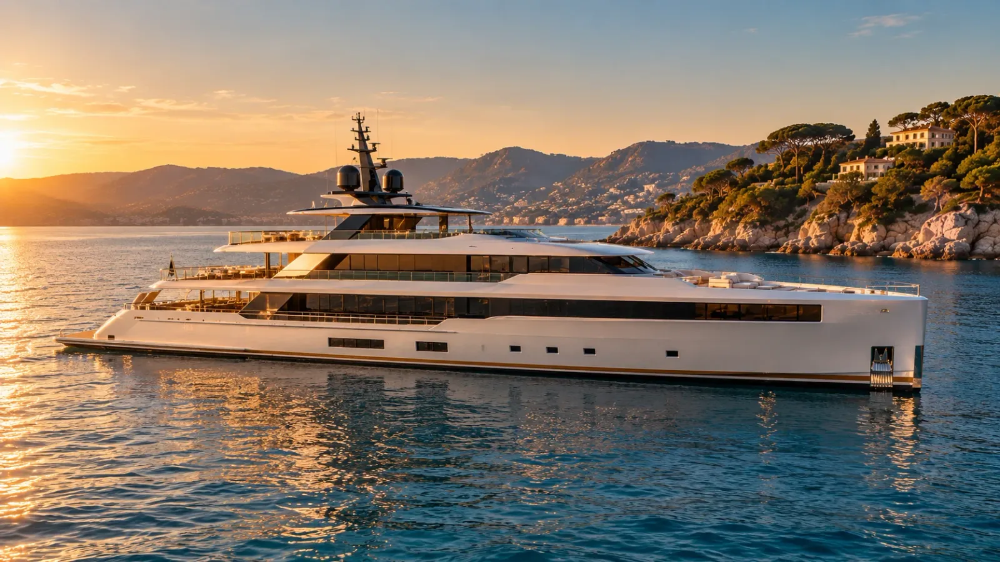
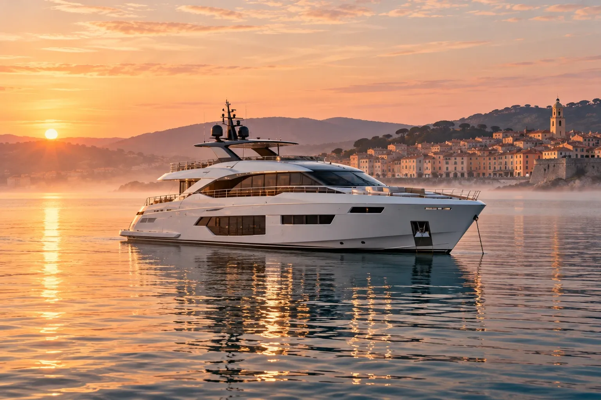
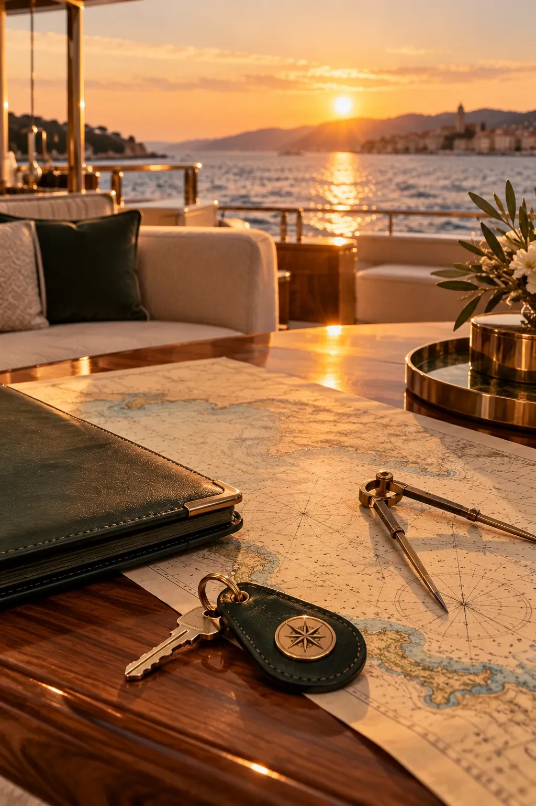
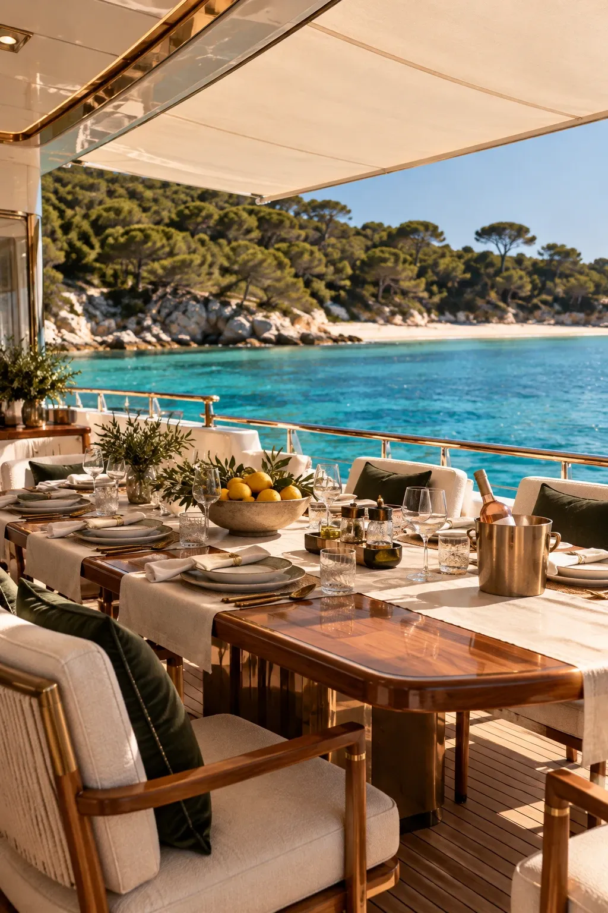

Yachtmakler an der Côte d'Azur
Yachten zu verkaufen und zu chartern, von Saint‑Tropez bis Monaco
Jede Überfahrt beginnt auf einer Seekarte. Scrollen Sie, um an Bord zu gehen.
Yachtmakler an der Côte d'Azur
Jede Überfahrt beginnt auf einer Seekarte. Scrollen Sie, um an Bord zu gehen.
Bucht von Pampelonne, vor Anker
Fünfzig Meter, drei Decks, zwölf Gäste. Folgen Sie uns an Bord.
Die Annäherung
Die Sonne sinkt über den Pinien. Wir fahren ans Heck, dort, wo man an Bord geht.
Badeplattform
Teak direkt über dem Wasser, dann die beleuchtete Treppe, Stufe für Stufe.
Hauptdeck, achtern
Die Außenlounge verlängert den Salon, schwellenlos, dem Sonnenuntergang zugewandt.
Der Salon, 62 m²
Die raumhohen Fensterfronten öffnen sich auf beiden Seiten zum Meer.
Das Esszimmer
Der Tisch aus Nussbaum, von der Crew gedeckt, und Kurs auf Saint‑Tropez.
Die Bar
Hinterleuchteter Marmor, flaschengrünes Leder und die Tür offen zum Deck.
Zur Suite
An den Wänden alte Seekarten. Am Ende das Meer.
Eignersuite, 48 m²
Am Bug des Hauptdecks eine geschwungene Fensterfront zur Küste.
Das Bad der Suite
Marmor, gebürstetes Messing und die Bucht von Pampelonne als Kulisse.
Zentrale Treppe
Nussbaum, Glas und Messing, bis zum Oberdeck.
Camarat · 50 m · abgeliefert 2024
Zu verkaufen, 42.000.000 €. Oder wochenweise zu chartern, ab 240.000 €, mit ihrer Crew. Besichtigung in Saint‑Tropez nach Vereinbarung.
Das Haus
Von Saint‑Tropez und Monaco aus begleitet Portolan Kauf, Verkauf und Charter von Yachten zwischen 20 und 70 Metern. Wir gehen vor Ihnen an Bord, kennen die Kapitäne beim Vornamen und zeigen Ihnen nur, was wir selbst gewählt hätten.
Unsere Methode



Auswahl der Woche
01 Exklusiv bei Portolan
Zu verkaufen, 42.000.000 € · Charter ab 240.000 € pro Woche
02 Heesen
Zu verkaufen, 34.500.000 €
03 Benetti
Charter ab 185.000 € pro Woche
04 Perini Navi
Charter ab 72.000 € pro Woche
05 Custom Line
Charter ab 95.000 € pro Woche
06 Sanlorenzo
Zu verkaufen, 7.900.000 €

Verkauf und Suche
Wir finden das Boot, bevor es inseriert wird. Besichtigungen, Gutachten, Probefahrt, Verhandlung und Flagge: Sie haben einen einzigen Ansprechpartner, von Saint‑Tropez bis Monaco.
Mit Portolan kaufen
Charter mit Crew
Eine Woche zwischen den Lérins-Inseln und der Bucht von Pampelonne, eine ausgewählte Crew, eine Route, die mit dem Kapitän nach dem Wind des Tages geplant wird.
Mit Portolan charternEin erstes Gespräch, in Saint‑Tropez, in Monaco oder bei Ihnen. Wie Sie unterwegs sind, Ihre Gäste, Ihre Saisons.
Wir besichtigen jede Yacht, bevor wir sie Ihnen vorschlagen. Drei Boote statt dreißig.
Eine Ausfahrt mit dem Kapitän, zwischen Pampelonne und den Hyèrischen Inseln, um das Boot dort zu beurteilen, wo es zu Hause sein wird.
Gutachten, Verhandlung, Flagge, Crew: Wir begleiten alles bis zur ersten Ausfahrt, und darüber hinaus.
Unsere Reviere
Sechzig Seemeilen Küste, zwei Büros und die schönsten Ankerplätze dazwischen.
Unsere zehn Ankerplätze„Sie haben uns drei Boote gezeigt. Wir haben das zweite gekauft und mussten nie jemandem hinterhertelefonieren.“
Kontakt
Drei Fragen, zwei Minuten. Ein Makler ruft Sie innerhalb von 24 Stunden mit einer ersten Auswahl zurück.